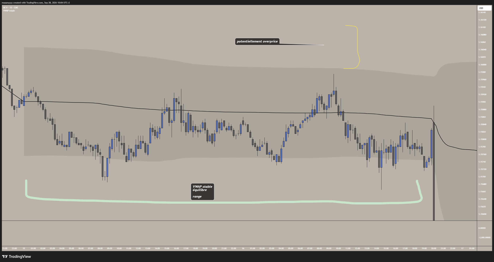
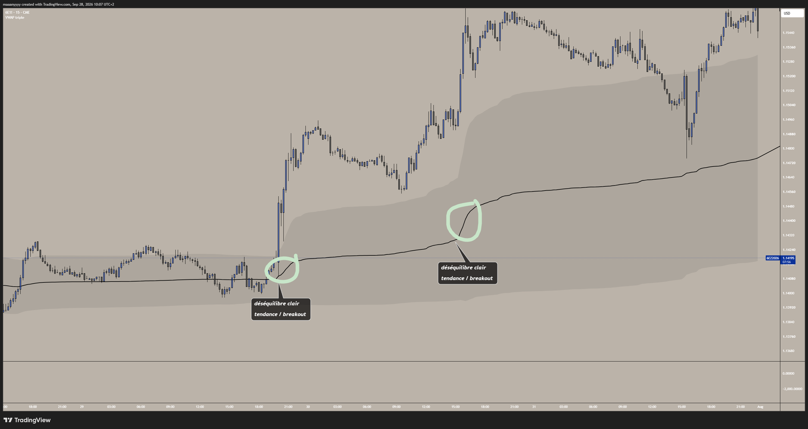
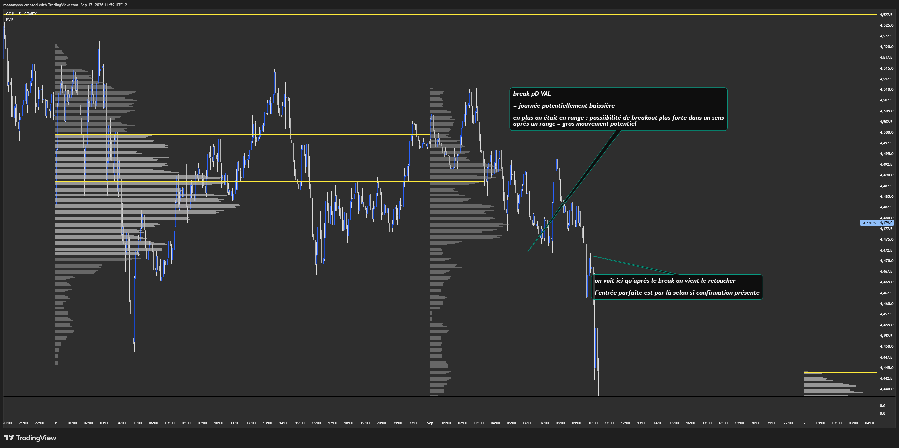
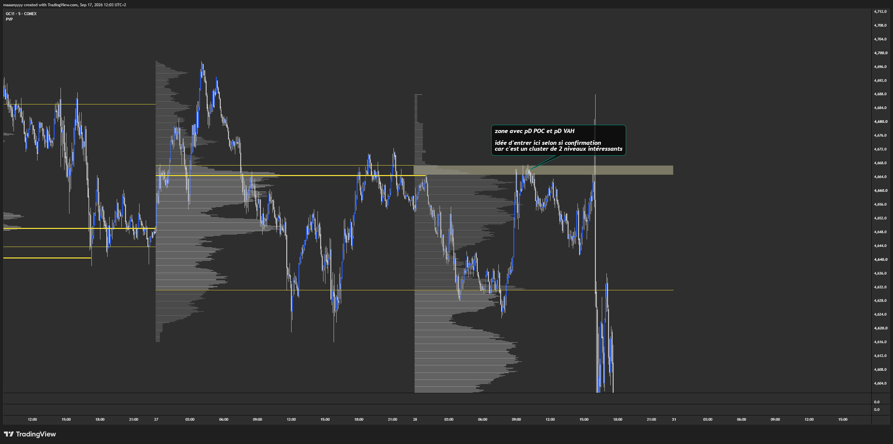

3. La mécanique des prix
🟡 · Cinq notions, dans l'ordre : mécanique des prix · AMT (auction market theory) · VWAP · volume profile · absorption
Tout n'est pas dans le prix
Un graphique en bougies te montre le résultat : où le prix est allé. Il ne te montre pas qui l'a emmené là, avec quelle force, ni qui l'attendait en face.
Deux bougies identiques peuvent raconter deux histoires opposées. L'une, des acheteurs qui poussent et qui gagnent. L'autre, des acheteurs qui poussent de toutes leurs forces et qui se font encaisser par un vendeur qu'on ne voit pas.
Cette partie, c'est l'intérieur de la bougie : comment le prix bouge vraiment, où le marché se juge juste, et comment voir l'effort derrière le résultat.
Ce que tu sauras faire
- Expliquer pourquoi le prix bouge, sans dire « il y a plus d'acheteurs ».
- Reconnaître un marché équilibré et un marché déséquilibré.
- Lire une VWAP et un volume profile : où est le volume, et qu'est-ce que le prix en a fait.
- Repérer une absorption, et comprendre pourquoi elle peut retourner le prix.
- Savoir dans quel ordre regarder : la zone, la confirmation, puis est-ce que ça vaut le coup.
Définitions
- Ordre limit : j'achète (ou je vends) à ce prix-là exactement, et j'attends. Il fournit la liquidité. On le voit dans le DOM (le carnet d'ordres).
- Ordre market : j'achète maintenant, au prix disponible. Il consomme la liquidité.
- Stop : un ordre qui dort et devient un ordre market quand le prix le touche.
- Liquidité : tous les ordres limit en attente.
- Volume : le nombre de contrats échangés, acheteurs et vendeurs confondus.
- Effort : la force des ordres market.
- Footprint (FP) : une bougie qui montre le volume en plus de l'OHLC, niveau de prix par niveau de prix. Il montre les ordres market, donc ce qui a été exécuté.
- Delta : dans une bougie, les achats market moins les ventes market.
- Résultat : le prix. La conséquence.
- Équilibre : beaucoup de volume à un endroit ; acheteurs et vendeurs sont d'accord sur un prix.
- Déséquilibre : ils ne sont plus d'accord ; le prix se déplace pour chercher un nouvel accord.
- VWAP : le prix moyen pondéré par le volume, sur une période (daily, weekly, monthly).
- Volume profile (VP) : où est le volume, à quels niveaux de prix. Pas besoin de plus.
- POC : le niveau où il y a eu le plus de volume.
- Value area (VA) : la zone où il y a eu le plus de volume, environ 70 %. VAH = son bord haut, VAL = son bord bas.
- HVN / LVN : les pics et les creux du profil. Beaucoup de volume = beaucoup d'intérêt ; peu de volume = personne n'est intéressé.
- Absorption : beaucoup d'effort, peu de résultat. Des ordres limit encaissent les ordres market et le prix n'avance pas.
- Trapped : des traders coincés, que le prix contredit juste après leur entrée. Pour sortir, ils doivent faire l'inverse de leur entrée.
Notion 1 — La mécanique des prix
La théorie
1 achat = 1 vente.
Il y a toujours un ratio 1:1 : tout achat dépend d'un vendeur en face. C'est logique ; tu achètes quelque chose qu'un autre mec te vend, à un prix donné. Si personne ne te le vend, tu ne peux rien acheter. Transpose ça au pain, à l'immobilier, c'est pareil.
Et mathématiquement, 300 acheteurs pour 300 vendeurs, c'est pareil que 1:1.
Deux façons d'être des deux côtés :
- acheteur limit et vendeur market ;
- acheteur market et vendeur limit.
Donc le prix ne bouge pas parce qu'il y a « plus d'acheteurs que de vendeurs ». Il bouge à cause de celui qui est pressé.
Prends 100 vendeurs de pommes à 1 €.
- S'il y a 100 acheteurs, le prix reste à 1 € : tout le monde est satisfait, c'est l'équilibre.
- S'il y a 110 acheteurs, les 10 derniers, s'ils sont market, veulent acheter à tout prix, donc plus cher. Le marché les met en contact avec des vendeurs à 1,10 €.
Le limit, lui, attend d'autres vendeurs à 1 €. Il n'est pas pressé. Il est chill, le mec limit.
Le prix monte d'un cran quand les acheteurs market ont mangé tous les vendeurs limit du niveau. Il baisse d'un cran quand les vendeurs market ont vidé tous les acheteurs limit. Les acheteurs market sont les seuls à pouvoir faire monter le prix ; s'ils ne sont pas là, les vendeurs le font baisser beaucoup plus facilement.
- 01Ask disponible
Le vendeur limit attend au niveau A.
- 02Agression
Les achats market consomment l’ask au niveau A.
- 03Niveau vidé
L’ask au niveau A est épuisé.
- 04Nouvelle marche
La prochaine exécution acheteuse se fait au niveau B.
Et les gros ? Ils interviennent majoritairement en limit.
Un exemple à la va-vite, juste pour visualiser la différence d'échelle entre eux et nous. Prends un portefeuille de 50 Md$ : même en risquant 0,5 %, c'est 250 M$. Sur le 6E, avec un stop de 100 ticks, ça lui ferait 400 000 contrats. En face, il n'y a probablement pas 400 000 contrats disponibles. Il faut toujours la contrepartie.
Ce calcul est volontairement grossier : un gros acteur ne raisonne pas comme ça. Rentrer avec une telle taille, c'est tout un métier ; il découpe ses ordres, il étale ses entrées sur des heures ou des jours, et souvent il n'a même pas de stop au sens où on l'entend. Retiens seulement l'ordre de grandeur : ce qui est un petit ordre pour lui est un océan pour le marché.
S'il rentrait market, il gratterait tous les vendeurs disponibles, un palier après l'autre ; il se mangerait les spreads et son prix d'exécution deviendrait aléatoire. Les gros acteurs n'ont pas tous le droit, ni même la possibilité, de rentrer au market. Donc on veut suivre les limit.
Nuance quand même : il y a des mecs qui fournissent de la liquidité en permanence, aka les market makers. Ils sont là pour gratter des spreads, faire de l'arbitrage ; c'est grâce à eux que le prix bouge tout le temps. Ceux-là, ils sont quasiment toujours là, donc pas vraiment exploitables. Nous, on cherche les autres : les gros acteurs qui interviennent en limit pour du hedging, du directionnel…
La pratique
Le prix = la conséquence de la bataille entre acheteurs et vendeurs.
Et la bataille (sa violence, le nombre, l'emplacement des acheteurs et des vendeurs) nous donne le degré d'effort.
Le premier outil pour mesurer l'effort, c'est le volume : le volume total de la bougie, l'indicateur volume de TradingView suffit. Un volume supérieur à la moyenne : il y a eu de l'effort. Un volume faible : personne ne s'est vraiment battu, le résultat est peut-être faussé.
Grosse bougie rouge + CHOD = les vendeurs ont pris le contrôle, selon Som. Sauf que la taille d'une bougie, c'est le résultat, pas l'effort. Sur un volume ridicule, ce ne sont pas des vendeurs très forts ; c'est peut-être juste les acheteurs partis déjeuner. Sans acheteurs market en face, le prix baisse tout seul, sans grand effort.
Tu cherches deux choses :
- de la cohérence : effort et résultat dans le même sens, on peut se dire que ça va continuer ;
- des divergences : de l'effort, pas de résultat.
Et vu qu'on trade des bougies de temps, on attend toujours que la bougie soit clôturée avant de prendre une décision. En cours de bougie, tout peut encore changer.
Tu sais comment le prix bouge. Reste la vraie question : pourquoi il va là plutôt qu'ailleurs, et pourquoi il s'arrête.
Notion 2 — L'AMT, la théorie de l'enchère
La théorie
L'AMT (auction market theory, la théorie de l'enchère), c'est simple : le marché cherche en permanence le prix où il se fait le plus d'échanges. Celui qui satisfait le plus d'acheteurs et de vendeurs à la fois. Quand il l'a trouvé, il tourne autour. Quand il ne le trouve plus, il se déplace pour aller le chercher ailleurs.
L'équilibre : la baguette à 1 €. En France, la baguette est autour de 1 € dans presque toutes les boulangeries, depuis des années. Les boulangers sont d'accord, ils rentrent dans leurs coûts ; les clients sont d'accord, le prix leur paraît cohérent. Autour de 1 €, il y a énormément d'échanges. Le boulanger qui la vend 1,50 € trouve peu de clients ; le client qui veut la payer 0,50 € trouve peu de boulangers.
Le déséquilibre : le m² parisien. À Paris, le prix au m² a monté pendant des années. Plus de demande que d'offre ; les vendeurs, moins nombreux, montent leurs prix. Les acheteurs au prix fort sont-ils fous ? Non. Pour eux, aucun prix n'a encore été accepté par l'ensemble du marché ; la valeur est en train de se déplacer, donc ils continuent d'acheter.
Souvent, l'équilibre se voit en range et le déséquilibre en tendance. Souvent, pas toujours : le range et la tendance se lisent avec le prix, l'équilibre avec le volume échangé. C'est toute la différence.
Et c'est soit l'un, soit l'autre. Un marché ne peut pas être « équilibré et indécis » : s'il y a équilibre, il n'y a pas d'indécision entre acheteurs et vendeurs.
La pratique
Si le prix est considéré comme overpriced (trop cher) : plus de vendeurs, parce que c'est l'occasion de vendre haut et de racheter plus bas ; et moins d'acheteurs, parce que c'est déjà cher, pourquoi acheter ?
Si le prix est considéré comme underpriced (pas cher) : plus d'acheteurs, parce que c'est l'occasion d'acheter bas et de revendre plus haut ; et moins de vendeurs, parce que c'est déjà bon marché, pourquoi vendre ?
T'achètes les opportunités, tu revends les excès. Fais le lien avec l'immobilier : ce bien est trop cher, je ne l'achète pas. Ce bien n'est pas cher, je l'achète, je fais des travaux et je le revends, même s'il ne m'intéressait pas à la base.
Une séance, c'est donc soit une enchère qui tourne autour d'une valeur acceptée, soit une enchère qui en cherche une nouvelle. C'est la première question à te poser en ouvrant ton graphique.
Et tu te la poses à plusieurs échelles. Une tendance haussière depuis plusieurs jours, un équilibre sur la journée, un flux baissier sur les dernières minutes : ça existe, et ça arrive souvent. Il faut savoir jongler avec le contexte global ; tu regardes globalement, puis tu zoomes. C'est là qu'on voit quel trader tu es : certains ont l'expertise pour gérer ce contexte, d'autres restent focalisés sur la théorie, et c'est là que ça fait mal.
L'enchère cherche un prix accepté par les deux camps. Il nous faut un moyen de le voir. Il y en a deux : une ligne, et un profil.
- 01Équilibre
Beaucoup d’échanges autour d’un prix accepté par les deux camps.
- 02Déséquilibre
Le prix quitte cette zone ; peu d’échanges s’y font.
- 03Recherche
L’enchère explore d’autres prix.
- 04Nouvel équilibre ?
Il faut observer où l’activité se reconstruit.
Notion 3 — La VWAP
La théorie
On cherche le prix que le marché juge juste. Le plus simple, c'est de regarder le prix moyen auquel tout le monde a réellement échangé aujourd'hui.
Reprenons les pommes. Ce matin, 100 kg se sont vendus à 1 €, puis 10 kg à 1,10 €. Le prix moyen « à l'œil », entre 1 € et 1,10 €, serait 1,05 €. Pour autant, presque tout s'est échangé à 1 € ; les 1,10 €, c'est une poignée de pressés. Le vrai prix moyen payé, c'est (100 × 1 + 10 × 1,10) ÷ 110 ≈ 1,01 €.
Ce prix moyen, pondéré par ce qui a été échangé, c'est la VWAP (volume weighted average price).
VWAP = somme de (prix × volume) ÷ somme des volumes
On la calcule sur une période : la journée (daily), la semaine (weekly), le mois (monthly). Les gros volumes pèsent plus que les petits ; c'est pour ça qu'elle est théoriquement meilleure qu'une moyenne mobile classique (EMA, SMA), qui ne regarde que les prix.
Elle représente le prix juste de la période, celui sur lequel les deux camps se sont mis d'accord. Et qui ne voudrait pas acheter à un prix défini comme juste par les deux parties ? Les gros acteurs vont vouloir se placer ici.
CQFD, ça renvoie à la théorie de l'enchère. Et CQFD x2 : il y a logiquement beaucoup de volume à ce niveau-là, vu que beaucoup sont intéressés par ce prix juste. C'est donc un niveau algorithmique plus qu'intéressant.
C'est aussi un niveau qui bouge, puisque le volume et le prix évoluent au cours de la journée. La VWAP peut donc servir à identifier la tendance : prix au-dessus de la VWAP = plutôt haussier ; en dessous = plutôt baissier. La plupart du temps.
Autour d'elle, on pose des bandes à un et deux écarts-types. Elles ne servent pas à son calcul : elles mesurent à quel point le prix s'écarte de ce prix juste.
La pratique
Deux contextes, et chacun se trade d'une façon différente :
- Range : VWAP plate, stable. Le prix oscille autour, autour du prix juste ; il traverse les bandes dans les deux sens. La VWAP = un aimant potentiel. C'est l'équilibre.
- Tendance : la VWAP monte (ou descend), il y a un déséquilibre entre acheteurs et vendeurs. Le prix colle à une bande et ne revient pas vers la VWAP. Le degré de la pente peut indiquer la puissance de la tendance.
Reconnaître le contexte, c'est savoir quoi trader et comment.
Deux exemples sur l'euro (6E, bougies de 15 minutes, VWAP weekly), avec mes annotations :


- 01Le repère
La VWAP, le prix juste de la séance, et sa bande à un écart-type.
- 02Équilibre
VWAP plate : le prix la traverse dans les deux sens. Elle sert d’aimant.
- 03Déséquilibre
VWAP qui monte : le prix reste au-dessus et ne revient jamais à la VWAP.
- 04La bande
Les replis s’arrêtent sur +1 écart-type ; plus la pente est forte, plus le déséquilibre est net.
Exemple concret : sur le NQ, plein d'acheteurs market, et le prix qui ne fait que chuter, qui ne repasse jamais au-dessus de la VWAP. Les vendeurs étaient clairement plus forts ; ils protégeaient la VWAP.
La VWAP résume la période en une ligne. Pour autant, une ligne ne dit pas où le marché a passé du temps, ni où il n'a fait que passer. Pour ça, il faut regarder où est le volume.
Notion 4 — Le volume profile
La théorie
VP = où est le volume, à quels niveaux de prix.
Une bougie range le volume par temps. Le VP range exactement le même volume par prix : chaque transaction s'empile sur la ligne de son prix. Ça donne un histogramme couché, très large là où le marché a beaucoup échangé, réduit à un trait là où il n'a fait que passer. On croise mathématiquement le volume et le prix, au cours du temps.
C'est la baguette, dessinée.
- 01Bougies
Le graphique montre quand les échanges ont eu lieu.
- 02Répartition
On regroupe ces mêmes échanges par niveau de prix.
- 03Profil
Les zones épaisses signalent beaucoup de volume échangé.
- 04Lecture
On compare ces zones à la réaction actuelle du prix.
Les repères :
- le POC : là où il y a eu le plus de volume en termes de niveau ;
- la VA : là où il y a eu le plus de volume en termes de zone ;
- ses deux bords, la VAH en haut et la VAL en bas ;
- les HVN et les LVN : les pics et les creux du profil.
Un HVN, imagine que tu poses ta bibliothèque dessus : si ça fait office d'étagère, c'est un HVN. C'est une question de taille du pic et de s'il est isolé ; les plus extrêmes sont les plus intéressants. Le POC est d'ailleurs un HVN.
Une LVN, c'est un creux, un beau V penché : personne n'est intéressé par ce prix. Donc soit ça fait office de support ou de résistance, soit ça se fait exploser et le prix passe vite à travers.
Pourquoi les bords de la VA font réagir ? Parce que les camps ont des motivations différentes. À la VAH, les vendeurs voient le prix comme cher ; ils veulent vendre pour renvoyer le marché vers la valeur. Les acheteurs, s'ils sont agressifs, veulent parfois casser au-dessus pour créer une nouvelle valeur plus haute. À la VAL, c'est le miroir. VAH et VAL sont les limites de l'équilibre ; tu peux faire le parallèle avec les bandes de la VWAP, c'est la même logique.
Le POC nu, c'est le POC d'une période passée que le prix n'est jamais revenu toucher. La mémoire ne s'efface pas à la cloche de clôture : si on revoit ce niveau, certains vont vouloir y remplir des ordres, que ce soit un TP, un SL, des mecs qui se mettent à break-even ou qui rechargent leur position. C'est là qu'ils sont relativement sûrs d'être servis : il y a du volume, de la liquidité. Par définition, dès qu'il est touché, c'est fini, il n'est plus nu.
Les formes. La forme traduit la concentration du volume. Ensuite, en croisant les formes avec les mouvements du prix, on obtient des modèles, des biais. Nuance donc : la forme n'est pas un modèle à elle seule.
- D : le volume concentré au centre, autour du POC. Beaucoup de monde est intéressé à ce niveau-là ; équilibre. Une bonne loi normale.
- P : du volume en haut, peu en bas. La valeur s'est installée en haut, on s'est séparé de l'ancienne valeur ; on devient déséquilibré jusqu'à retrouver un nouvel équilibre.
- b : le miroir de la P. La valeur s'est installée plus bas.
Donc la première question à se poser avec le VP : où est le volume ? où est la VA ?
- 01Zoom
Une bougie peut suggérer une forme P, b ou D.
- 02Dézoom
La séance entière peut former un profil similaire.
- 03Prudence
La silhouette ne donne ni intention ni direction future.
- 04Contexte
On lit l’emplacement et la suite de l’enchère.
La pratique
Le process : où est le volume ? et qu'est-ce que le prix en a fait ?
- Travaille sur le VP de la période précédente. Celui du jour continue de se former ; ton POC à 10 h ne sera probablement pas ton POC à 17 h. Le VP de la veille, lui, est clôturé ; l'information ne changera plus. Et ce qui est récent est plus pertinent : le VP -1 >> le VP -2.
- Où est le prix par rapport à la valeur d'hier ? Au-dessus, dedans, en dessous ? Au-dessus de la VAH de la veille, par exemple, c'est plutôt haussier.
- Trace les niveaux : POC, VAH, VAL, HVN et LVN les plus nets, et les POC nus encore ouverts. N'en trace pas trop ; prends les plus pertinents.
- Cherche les clusters. Plusieurs niveaux au même endroit (un POC de la veille, une VWAP weekly, une VAH…), c'est une zone. C'est là que tu regardes en priorité.
Et ne te limite pas mentalement à la journée. Ce qu'on voit en daily forme le weekly, le weekly forme le monthly ; les unités de temps plus longues sont encore plus puissantes, car HTF > LTF. Du moins, elles donnent une information plus générale.
Deux exemples sur l'or (GC, bougies de 5 minutes), avec mes annotations :


Tu as le contexte, tu as tes zones. Il manque la dernière question : quand le prix arrive sur ta zone, qu'est-ce qui s'y passe vraiment ?
Notion 5 — L'absorption
La théorie
Jusque-là, on a regardé le volume total : dans la bougie, dans la VWAP, dans le profil. Il dit s'il y a eu un effort. Reste à savoir dans quel sens étaient l'effort ou les efforts, et s'il y a force ou divergence.
Avant, on avait juste le prix comme résultat ; tout ce qui se passait à l'intérieur, le pourquoi le prix est ici, c'était caché. Le footprint le montre : à chaque niveau de prix, les achats market et les ventes market. La différence entre les deux, c'est le delta.
Un delta seul ne dit presque rien. Croisé avec le prix, il dit tout :
| Le prix | Le delta | Ce qui se passe | Ce qu'on en fait |
|---|---|---|---|
| Monte | Très positif | Les acheteurs poussent et ça avance. | Mouvement sain, on suit |
| Monte | Faible ou négatif | Ça monte sans que personne pousse. | Pas de moteur, méfiance |
| Stagne | Très positif | Ils achètent en masse et rien ne bouge. | Quelqu'un vend tout en face : absorption |
| Baisse | Très positif | Ils attaquent et perdent quand même. | Ils sont trapped |
DOM = ordres limit, ceux en attente = la liquidité. FP = ce qui a été exécuté. Un ordre limit s'annule en un clic, gratuitement ; on part donc toujours de ce qui a été exécuté.
Si je vois un delta négatif, donc des vendeurs agressifs, mais que le prix monte, comment c'est possible ?
Ça sous-entend que les acheteurs limit sont plus nombreux, donc plus forts que les vendeurs agressifs. Les vendeurs sont exécutés, mais sans résultat. C'est la troisième ligne du tableau : de l'effort, pas de résultat.
Quand tu vois plein d'acheteurs dans le FP, en delta, dans une mèche haute, c'est de l'absorption ou des trapped : des vendeurs limit se sont placés. Toujours à cause du ratio 1:1 ; pour qu'un mec achète 1 NQ market, il faut un vendeur NQ limit en face.
Absorption et trapped, c'est la même idée vue des deux côtés : des limit encaissent, et ceux qui les ont agressés se retrouvent coincés. Deux nuances quand même :
- l'absorption est concentrée, sur 1 ou 2 ticks. Tu vois beaucoup de contrats market à un endroit, parce qu'en face c'est un mur infranchissable ; donc retour dans l'autre sens ;
- les trapped, c'est plutôt dans l'ensemble de la mèche. Une mèche haute remplie d'acheteurs : ils sont coincés, ils vont devoir clôturer leurs positions, donc revendre.
Et selon l'unité de temps, l'absorption peut se faire en une ou en plusieurs bougies : ce qu'on voit en M5 sur deux bougies, c'est une seule bougie M10.
Pourquoi c'est un signal fort ? Parce qu'on ne peut pas bluffer une absorption. Afficher un gros ordre ne coûte rien ; encaisser tout un flux agressif coûte cher. Quelqu'un avec de la taille a décidé que le prix ne passerait pas, et il l'a payé.
Et la suite est souvent violente. Ceux qui ont agressé sont dans le rouge ; pour couper un achat, il faut vendre. En capitulant, donc en clôturant leurs positions, ils passent dans le camp opposé. Leurs stops sont des ordres en attente dans l'autre sens ; quand ils sautent, ils deviennent le carburant du mouvement inverse.
Le meilleur pattern intra-bougie, c'est donc une absorption ou des trapped dans un sens, puis des acteurs opposés qui rentrent pour driver le prix, dans le sens des limit.
Où est l’absorption ?
- 01Même prix
Deux prix cessent de progresser. Quelle différence chercher ?
- 02Choisis
Absorption ou manque d’agression ? Réponds avant de révéler.
- 03Cas A
Fort volume exécuté, peu de déplacement : absorption possible.
- 04Cas B
Faible volume exécuté : l’effort manque ; la cause est différente.
La pratique
Pour lire une bougie, décompose :
- Observations : le résultat est haussier ou baissier ? À quel point (gros rejet, gros corps…) ? Quel est l'effort, le delta ? Qui est où : acheteurs ou vendeurs proches de la clôture, loin de la clôture, dans la mèche ?
- Analyses : croise les informations. Haut de mèche, corps baissier et delta négatif, c'est cohérent ou non ?
- Conclusion : puis regarde le résultat, la bougie d'après.
Un exemple sur le pétrole (CL, bougies de 5 minutes, 28 septembre 2026, heure de Paris). Avance étape par étape : les bougies seules, puis le footprint de la même séance, puis mon indicateur, puis la suite.

- 01Les bougies
À 9 h 30, une longue mèche basse et une clôture en haut. Le résultat est haussier.
- 02Le footprint
Dans la mèche, plus de vendeurs market : delta −112 sur 836 contrats. L'effort est vendeur.
- 03L'indicateur
Effort vendeur, résultat haussier : des acheteurs limit ont tout encaissé. Absorption, signalée sur la zone.
- 04Le résultat
Entrée 94,33, stop 93,94 sous la mèche, objectif 94,72 : le prix monte jusqu'à 94,79 vers 10 h 05.
- Observations : la bougie de 9 h 30 descend chercher 93,94, puis clôture en haut, vers 94,35. Grosse mèche basse, corps haussier. Dans la mèche, plus de vendeurs market que d'acheteurs : delta de −112 sur 836 contrats.
- Analyses : des vendeurs agressifs, et le prix remonte quand même. Effort vendeur, résultat haussier ; ce n'est pas cohérent. Des acheteurs limit ont tout encaissé : absorption. Et les vendeurs de la mèche sont trapped, sous le prix.
- Conclusion : les bougies d'après ne reviennent pas chercher la mèche ; le prix monte jusqu'à 94,79 vers 10 h 05. Avec mon indicateur, sur ma zone : entrée à 94,33, stop à 93,94 sous la mèche, objectif à 94,72.
Et garde en tête que le prix a toujours raison. Une bougie qui clôture au-dessus de la précédente, c'est souvent ça le vrai signe, plus que la VA ou le POC de la bougie.
Pour autant, l'orderflow n'est pas un système. C'est l'outil d'exécution, de confirmation ; la plupart du travail important se fait avant. Ne passe pas au FP tant que tu n'as pas ta zone et ta tendance.
Le process, toujours le même :
- Où est-ce que mon scénario a des chances de se réaliser ? Ce sont tes zones, préparées avant la séance.
- Est-ce que je vois mon scénario se réaliser, et est-ce que je peux encore en profiter ? Ce sont tes confirmations, au contact de la zone seulement.
- Est-ce que ça vaut le coup de rentrer ? Les contre-confluences, le rapport entre ton SL et ton TP.
Une absorption au milieu de nulle part ne vaut rien ; la même absorption sur ta zone, dans ton contexte, c'est le trade.
- 01Contexte
Est-ce un environnement favorable ?
- 02Zone
Le prix arrive-t-il au lieu préparé ?
- 03Flux
Une confirmation apparaît-elle à la clôture ?
- 04Décision
Sinon, pas de trade. Aucun taux fictif n’est affiché.
Ton premier exercice. Pendant deux semaines, tu n'entres aucun trade. Tu notes 20 fois où le prix touche une de tes zones, avec ton verdict : absorption, trapped, ou le prix qui passe simplement. Puis tu regardes ce que le prix a fait ensuite. C'est le moyen le plus rapide de voir si tu lis, ou si tu devines.
Erreurs fréquentes :
- Croire que le prix monte parce qu'il y a plus d'acheteurs. Il y en a toujours autant des deux côtés : 1 achat = 1 vente.
- Conclure à l'équilibre sur un range sans regarder le volume. C'est souvent le cas, pas toujours : le range et la tendance, c'est le prix ; l'équilibre, c'est le volume.
- Prendre un gros delta acheteur pour un signal d'achat. Dans une mèche haute, ce sont souvent des trapped.
- Croire les tailles affichées dans le carnet. Elles s'annulent en un clic.
- Travailler sur le VP du jour qui se forme encore. Commence par celui de la veille.
- Traiter la VAH et la VAL comme des supports et résistances, et réagir à la mèche au lieu de la clôture.
- Lire le footprint partout. Il se lit sur ta zone, dans ton contexte ; pas avant.
- Affirmer sans élément. Distingue les faits et les hypothèses.
Transition vers la partie suivante
On cherche à profiter d'une asymétrie : c'est le jeu, peu importe la stratégie. La stratégie, c'est la façon dont on pense voir l'asymétrie ; selon les confluences de chacun, on voit différentes asymétries, donc différents edges. Et in fine, le jeu est binaire : le prix peut aller soit en haut, soit en bas.
Pour autant, voir l'asymétrie ne suffit pas. Prends une cible à 0,5R : on vise la moitié de ce qu'on risque. Avec une telle cible, il faut gagner plus de deux trades sur trois pour être seulement à l'équilibre. La même entrée, avec une cible à deux fois le risque, n'a besoin que d'un trade sur trois. Le même setup change de nature selon la cible choisie.
Et tout ça, ça ne se devine pas : de la logique et du backtest. Jamais de « oh tiens j'aime bien, ça paraît logique ». C'est ce qu'on apprend à mesurer dans la partie suivante.